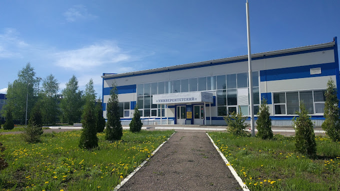

Бассейн Университетский

Руководитель:
Архипенко Игорь Васильевич
Сотрудники:
• Инструктор — Вдовенко Олег Юрьевич
• Инструктор — Казанкова Ольга Сергеевна
Адрес:
412307, Саратовская область, г. Балашов,
ул. Строителей, д. 4а
Телефон:
+7 (84545) 3 - 00 - 70
Email:
https://www.sgu.ru/structure/bisgu
В плавательном бассейне работают секции аквааэробики, обучения плаванию, спортивного совершенствования, проводятся спортивные соревнования.
В бассейне 6 дорожек длиной в 25 метров ждут всех желающих. Помимо студентов в ранние утренние и вечерние часы, а также в выходные дни
по абонементной системе здесь могут заниматься все желающие. В числе преимуществ и особенностей бассейна: двойная отчистка озонирование и хлорирование,
автоматизированная система наблюдения, которая выводит все необходимые данные, такие как температура воды и воздуха.